#
RVC Disconnected
Last update: Feb 14, 2024
#
#
Introduction
#
RVC Disconnected (or RVC-D) is a port of Mangio to Google Colab, for exclusively training. Notebook made by Kit Lemonfoot.
It's free, includes all the necessary tools for a quality model, the TensorBoard, & it's the fastest Colab space for training.
Making it the go-to method for training for cloud RVC users. Pretty much the only big downside is the time limit (but you can switch to another account & continue).
#
Pros & Cons
The pros & cons are subjective to your necessities.
- Has TensorBoard.
- Has Mangio-Crepe.
- Option to save model to HF.
- Includes the latest pretrains. Speeds up the process.
- Doesn't have a great UI.
- Takes some time to set up.
- You can't leave training unsupervised.
- For free users:
- It's slower compared to local RVC.
- Can't train long datasets without having to pause the process.
#
#
How to Train
#
IMPORTANT NOTE:
1. This guide is centered around the TensorBoard. Read it first if you haven't already.
2. Turn on third-party cookies, or TB might not work.
#
#
1. Prepare the dataset
First make a folder named after your model & move your dataset inside of it. Don't include spaces/special characters.
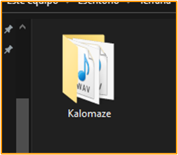
Then zip the folder as a
.ZIPfile. .7ZIP and .RAR aren't compatible with RVC-D.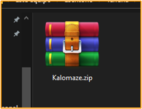
REMINDER: With modern versions of RVC, the dataset can be a single audio file. No need to split it.
#
#
2. Set up the Colab space.
Log in to Google account & head over to the Colab space.
Execute the
Dependenciescell & pressRun anyways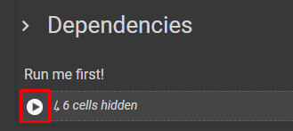
When this appears, press
Connect to Google Drive& select your Google account.
Once the cell is done loading, in Google Drive go to the
rvcDisconnectedfolder, and place the dataset's .ZIP inside said folder.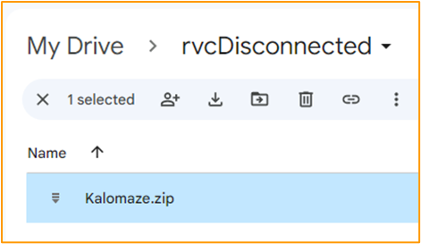
#
#
3. Set Training Variables.
Go to the
Set Training Variablescell.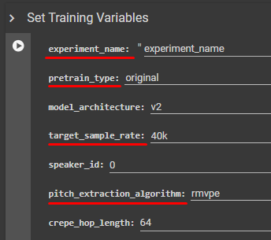
# Define these values:
experiment_name- Name your model. Don't include spaces/special characters.
pretrain_type- If you aren't familiar with pretrains, select
original. target_sample_rate- Select your dataset's sample rate.
pitch_extraction_algorithm- Learn about them here. Don't use Harvest, it's obsolete.
crepe_hop_length- Works if you use
Mangio-Crepe. Modifies its Hop Length.
#
#
4. Set the environment.
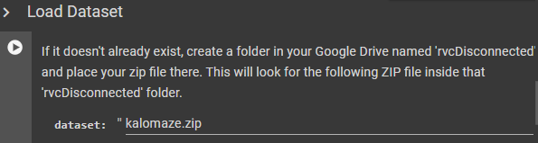
Go to
Load Datasetcell, and in thedatasetbar type the dataset's .ZIP name followed by ".zip". Example:kalomaze:zip.
Then execute the cell.Below, execute
Preprocessing,Feature Extraction, &Save preprocessed dataset files to Google Drive.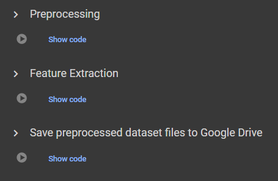
#
#
5. Train Index.
Run
Index Trainingto create the model's .INDEX file.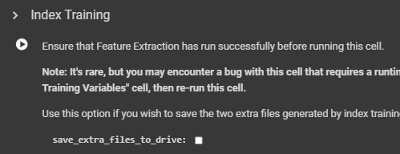
To download it, open
rvcDisconnectedin GD. Open the folder named after the model and download the .INDEX namedadded.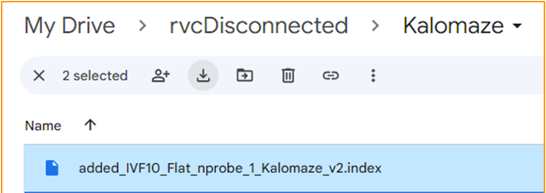
#
#
6. Set Training.
Go to the
Trainingcell.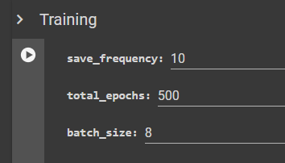
# Define these values:
save_frequency- At how many epochs the model will be saved at. These saved models are known as the "checkpoints". If you are a newbie, leave it at
15.
E.g: with a value of10, it will be saved after the epoch 10, 20, 30, etc. total_epochs- The total amount of epochs for the model. But since we'll use TensorBoard, use an arbitrarily large number like
2000. batch_size- Use
8if you are a newbie. But if your dataset is small (around 2 minutes or less), use4.
#
#
7. Begin training
Execute the
Trainingcell to begin the training. Be patient, it may take hours.TB will open up after a few seconds, remember to monitor it. The graphs will take a minute to appear.
The cell will be showing you errors if they happen, and information about the epochs & checkpoints.
While training, you might get disconnected if you:
• Ran out of usage time.
• Didn't interact with the space for a long time (staying AFK).
• Get disconnected from your Internet.
• Don't solve the captchas that (might) pop up occasionally.
#
#
8. Download model.
Once you are sure of overtraining, you can stop training by pressing the stop button of the
Trainingcell.Click the folder symbol on the right.
(For mobile users: tap the three lines on the top left &Show file browser)Open the
Mangio-RVC-Forkfolder, thenweights. There you'll find the model's checkpoints.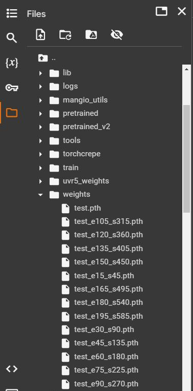
Right-click the one that's closest to before the overtraining point, and press
Download.The models will be organized with this format: Name_Epoch_Step.pth.
E.g:arianagrande_e60_s120.pth
And that's all. Have fun with your model. Remember to move them to a new folder to stay organized.
To test it, do a normal inference as usual.
#
#
Retraining
#
If the training finished but the model still needed training, you don't need to start from scratch.
You can continue from latest checkpoint, and the process is pretty easy.Depending on if you want to retrain from the same account or switch to another one, the process is a little different.
#
Go to the Colab space & input the same data as before, & execute the cells like normal, except
Preprocessing&Feature Extraction.Execute the
Load preprocessed dataset filescell.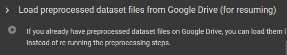
Go to the
Import Model from Drive to Notebookcell. InSTEPCOUNTintroduce2333333& execute it.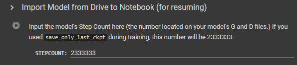
You can change the
save_frequencyor increase thetotal_epochs, in case you didn't input enough before.Run the
Trainingcell to retrain. Remember to monitor TB as before.
#
Execute the
Export Modelcell.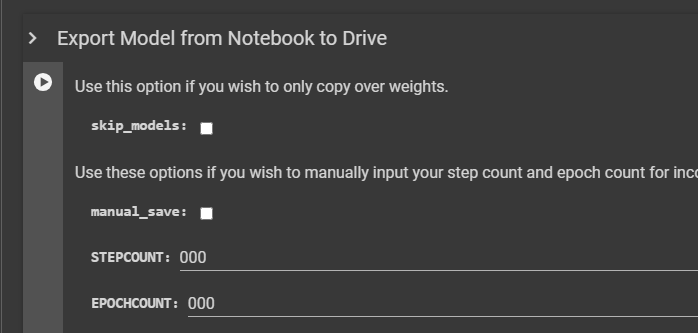
In GD, download the
rvcDisconnectedfolder on your device.Move the folder to your other account's GD storage. Make sure it's in the
My Driveunit.Open RVC-D with the other account. Input the same data as before & execute the cells from start like normal, except
Preprocessing&Feature Extraction.Execute the
Load preprocessed dataset filescell.
Go to the
Import Model from Drive to Notebookcell. InSTEPCOUNTintroduce2333333& execute it.
You can change the
save_frequencyor increase thetotal_epochs, in case you didn't input enough before.Run the
Trainingcell to retrain. Remember to monitor TB as before.
#
Original guide: Angetyde
Re-done by: Julia, Eddy, Poopmaster & Light